Query Expressions
This tutorial page continues directly from the SELECTION tutorial, so you will need to complete that first in order to have the data layers described below.
Continuing from the previous section on SELECTING FEATURES, we have three layers of data added to our current QGIS project, and have done a spatial select to find 153 features.
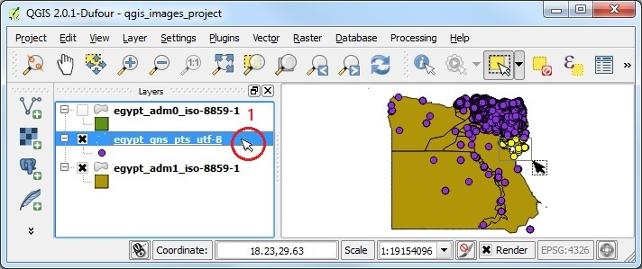
Right click on the active points layer, with the selected features, and OPEN THE ATTRIBUTE TABLE. Then scroll to the right until you can see the FULL_NAME_1 column.
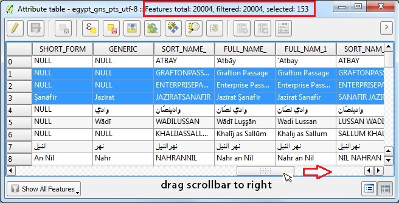
The simplest way to search for a word (or string) in QGIS 2.0 is to use Column Filter. From the bottom left drop-down menu, select COLUMN FILTER. Scroll right to the Columns List, then select the FIELD NAME you want to search in.
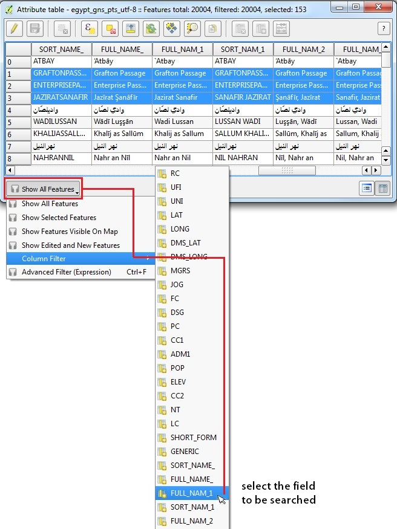
1. You will see a blank form where you can type in the string to be searched for
2. In this example, we are filtering for Passage and have left the case sensitive option checked
3. Click APPLY to run the search
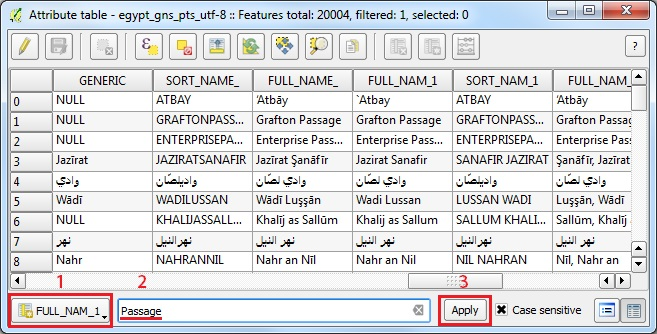
Only two records were found that contained the string Passage. If you change the query string to Pass and hit APPLY again, an additional row will be found, Daiqa Pass. This means that the search is essentially allowing for any characters to precede or to follow the search term (the equivalent of a wildcard like %Pass% )
Another way to run queries in QGIS is QUERY BUILDER. First DESELECT ALL the features, then Right-click on the points layer (egypt_gns) and go to PROPERTIES, then the GENERAL TAB. You may need to scroll down to the lower right to launch QUERY BUILDER.
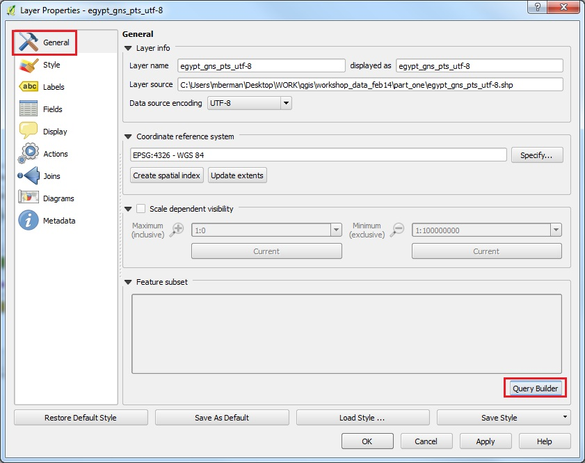
1. In the FIELDS form, scroll down and double-click on FULL_NAME_1
2. The Field Name should appear in the expression form near the bottom of the window
3. Click once on the operator button LIKE, which should appear in the expression form
4. Move your cursor to click after the word LIKE in the expression window
5. Type in your search string wrapped by SINGLE QUOTES and the wildcard %, for example: '%Pass%'
6. Click TEST which will validate the expression and show number of rows found when run
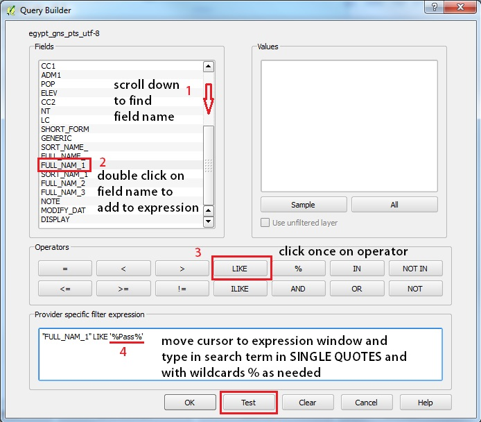
Clicking OK will close the TEST results, then click OK. You will be back on the GENERAL tab, with your Query Shown in the Provider Feature Filter. Click APPLY to run the query, and OK to close the Layer Properties. Now take a look at your map view and attribute table, which will show the rows selected using QUERY BUILDER.
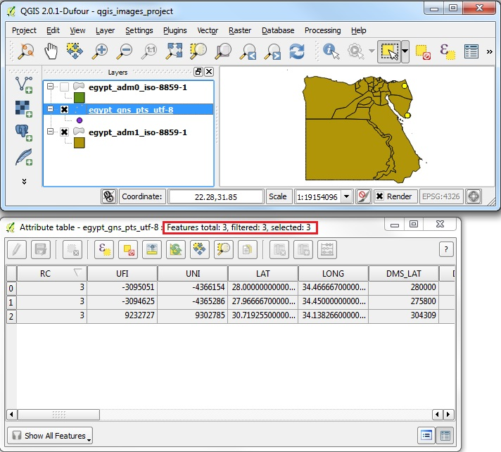
Note that the Query Builder has HIDDEN all the remaining features. You can always right click on the Layer and go to Properties | General | Query Builder and click the CLEAR button, which will restore your complete layer of features.
The COLUMN FILTER and QUERY BUILDER are essential User Interfaces that provide limited subsets of the querying and filtering functionality of QGIS. You can also make use of QGIS finer grained querying power, using the EXPRESSION tool user interface, or by running your own custom Python scripts with the same operators and functions. Let's see how the same query can select features using EXPRESSION. First, reset your attribute table on the lower left drop-down menu to SHOW ALL FEATURES. Then click on the EXPRESSION button to open the SQL Expression window.
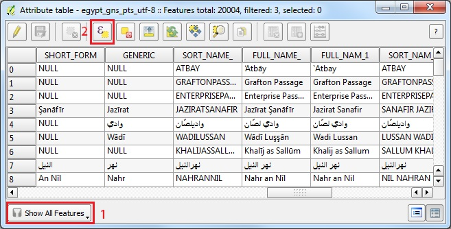
If you know which query operator, conditional or function you want to use, you can type it into the search bar above the FUNCTION LIST. For example, we can try typing LIKE. When you type LIKE into the search box, the term will be shown under it's parent group, OPERATORS.
Double-click on LIKE in the FUNCTION LIST to add it to your Expression form. You will see that a warning appears below the Expression form, indicating that the Expression is Invalid. This is very useful to see if you are constructing valid query expressions. Now move the cursor to the beginning of the Expression form, before LIKE, so we can add the FIELD NAME to be searched in.
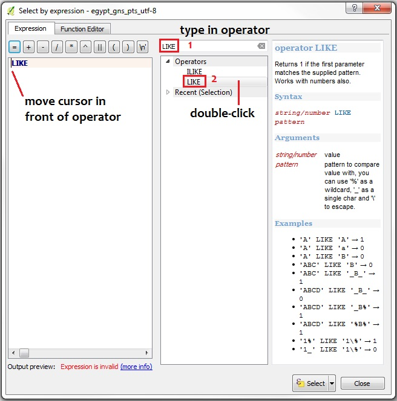
First, be sure to REMOVE or DELETE the word LIKE from the Search Box above the function list! (Otherwise the Function groups will not be expandable trees because they do not contain the term LIKE.)
Next expand the list of FIELDS AND VALUES in the Function List. Scroll down to find the field called FULL_NAME_1 and double-click on it. The Field Name should be added to the beginning of the Expression Form.
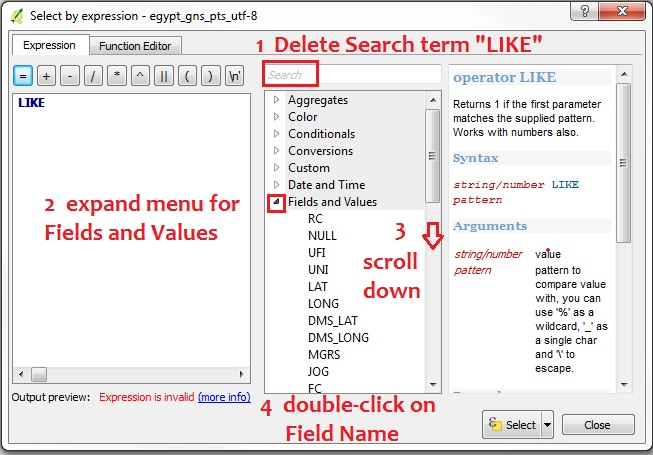
Now move the cursor to the right side of LIKE and type the search term within SINGLE QUOTES, and with the wildcard % before and after the term: '%Passage%'. Your expression should read: "FULL_NAME_1" LIKE '%Passage%' The Expression validation warning will disappear if this query expression is valid.
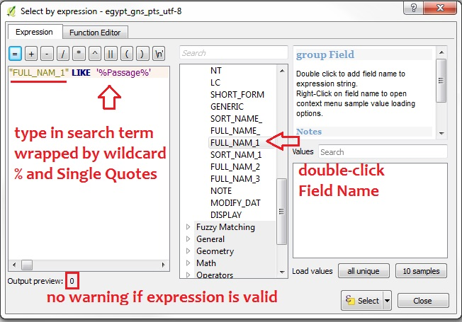
Click SELECT to run the query.
Return to the Attribute Table and use the drop-down on the lower left to SHOW SELECTED FEATURES. In this example only two records matched the string 'Passage' in the FULL_NAME_1 field.
Now click the DESELECT ALL button. Return to the EXPRESSION tool to search for 'Pass' and you should find three rows selected.
Use Regex in QGIS following the Python Regex rules.
QGIS provides the full extent of REGEX functionality, including the ability to run complex queries, maths, and search-replace operations. Just to get started, let's run a similar query with the regex function.
1. Click on the EXPRESSION button to open the tool
2. Type regex in the search box, then double-click on regexp_match
3. Delete the term regex from the search box, then expand the Fields and Values tree
Scroll down and double-click on the field to be searched, FULL_NAME_1
4. Move your cursor to click after "FULL_NAME_1" in the expression window
Type in the rest of the regex phrase, for example: ,'Pass$')
5. The syntax is: regexp_match("FIELDNAME",'regex')
in this case:
regexp_match("FULL_NAME_1",'Pass$')
6. Click SELECT to run the query
Note, the sample query above will find only ONE record, because the term Pass is followed by the $ flag, which indicates it is the END of the text being searched for.
If you DESELECT and try 'Pass' you should find three records, etc.
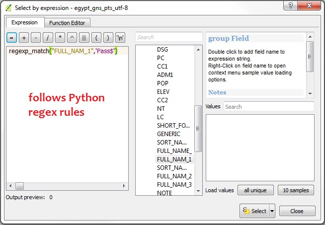
See the documentation on QGIS Expressions for lots of great functions! For example, the geometry functions will calculate the area of all polygons using the $area function.
Proceed to the IMPORTING DATA section